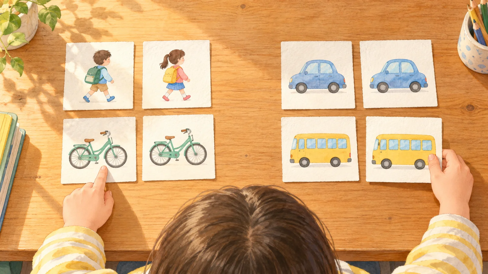
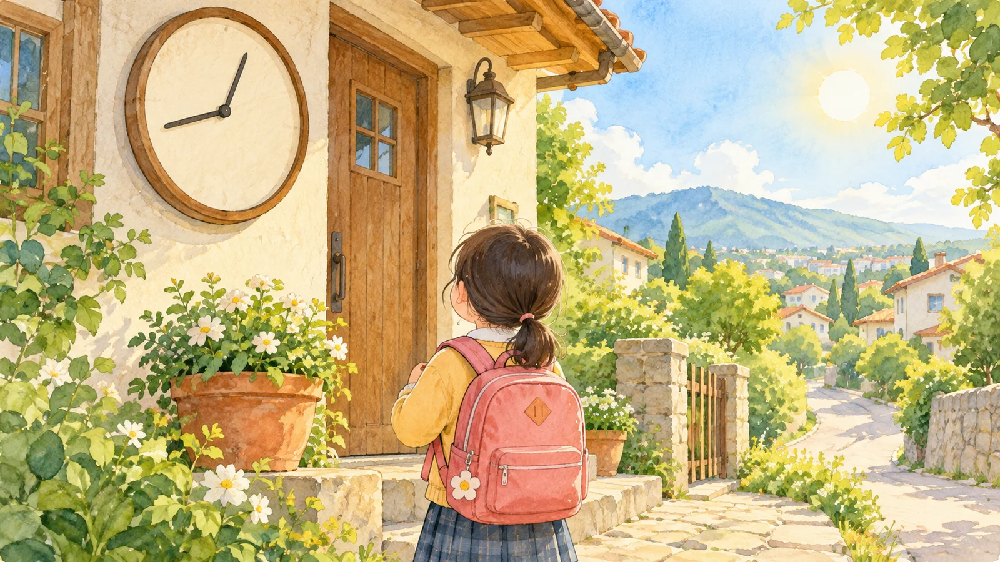
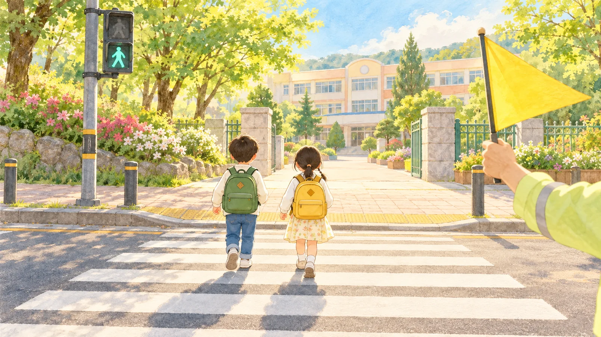
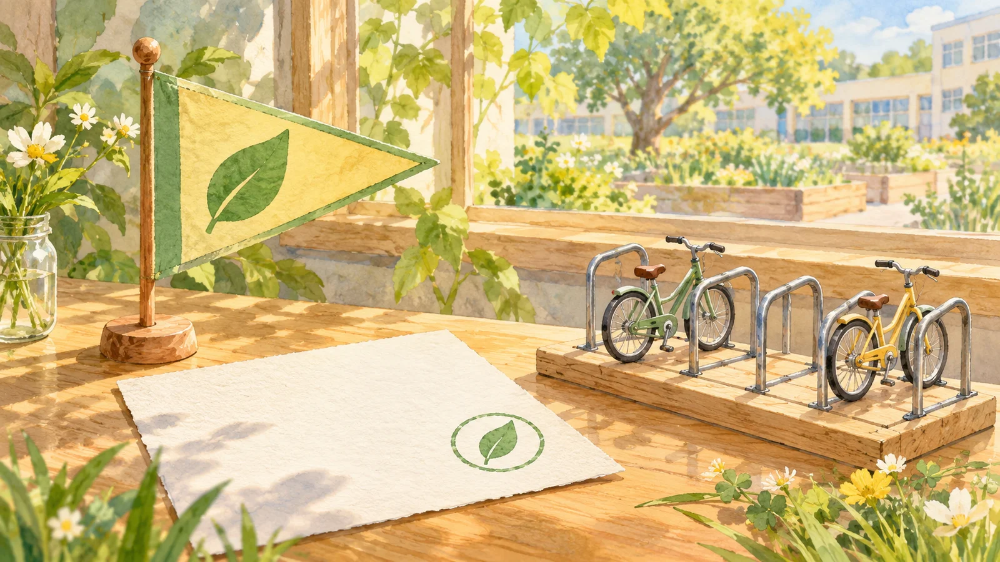

기준을 바꾸면 어느 줄의 묶음이 달라질까요?
기준1의 답이 기준2에서 바뀔 줄을 눌러요. 확인하면 기준2의 답이 열려요.
기준은 줄마다 '예'나 '아니요'로 답하는 물음이에요. 기준을 바꾸면 같은 사람이 다른 묶음에 들어가요. 기준 숫자와 똑같은 값은 '보다 오래'·'보다 많이'에 들지 않아요.

기준1
기준2


'목표'가 '예'인 줄만 내 기준에서도 '예'가 되게 해요. 고른 뒤 확인하기를 눌러요.

우리 반 표는 엔트리에서 직접 나눠 봐요. 미션 2·3의 한 판 더를 누르면 새 표가 나와요. 위의 ① 짚기를 눌러 다음 판을 해 봐도 돼요.
판마다 뽑은 예시 표예요. 우리 반 표는 엔트리에서 나눠요. 그림 일부는 생성형 AI로 만들었어요.